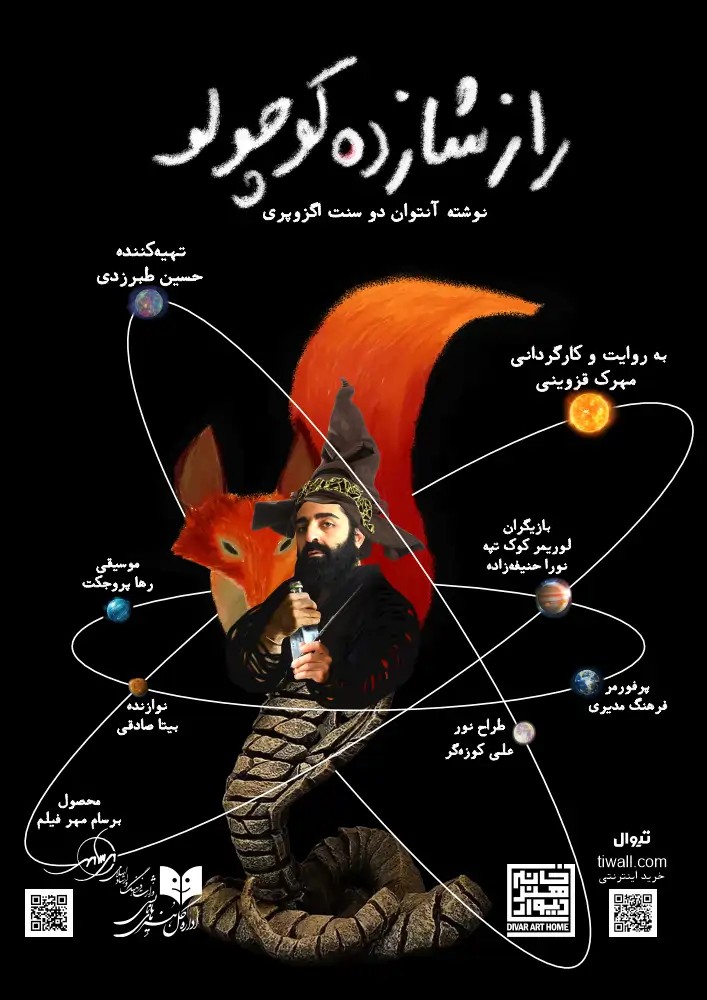
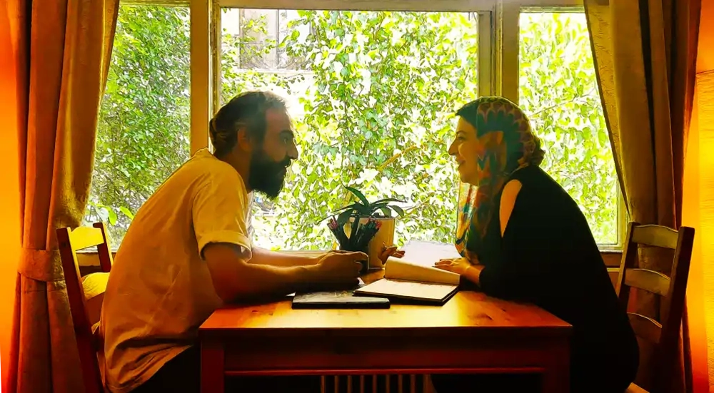

ما "برسام مهر" هستیم

سریال راز شازده کوچولو در برسام مهر تولید میشود.
سریال صوتی “راز شازده کوچولو” به کارگردانی مهرک قزوینی در استودیو برسام مهر، تولید میشود.
این سریال صوتی با صداپیشگی چهرههای شاخص سینما بر اساس کتاب شازده کوچولو، شاهکار آنتوان دوسنت اگزوپری، تهیه میشود. فرهاد آئیش در نقش روباه، بهنام تشکر در نقش پادشاه، احسان عبدی پور در نقش خودپسند، مهران غفوریان در نقش میخواره، منصور ضابطیان در نقش تجارت پیشه، امیرمهدی ژوله در نقش فانوسبان، وحید رونقی در نقش سوزنبان و اسماعیل باستانی در نقش خلبان از چهرههایی هستند که در سریال صوتی راز شازده کوچولو حضور دارند.
حسین طبرزدی و محمدحسین حسینپور، تهیهکنندگان این مجموعه هستند. مهرک قزوینی و حسین طبرزدی، روایت راز شازده کوچولو را به رشتهی نگارش درآوردهاند.

تئاتر “راز شازده کوچولو” بر اساس نوشته آنتوان دو سنت اگزوپری، در خانه هنر دیوار به روی صحنه رفت.
مهرک قزوینی با برداشت خود از کتاب “شازده کوچولو” این تئاتر را کارگردانی کرده و حسین طبرزدی تهیه کنندگی آن را بر عهده گرفته است.
ویراستاری و تبدیل آن متن به نمایشنامه را مهرک قزوینی انجام داده است. لوریمر کوک تپه در هشت نقش پادشاه، خودپسند، میخواره، تجارت پیشه، جغرافی دان، سوزنبان، مار و روباه در این نمایش ظاهر خواهد شد و نورا حنیفه زاده، نقش گل سرخ محبوب شازده کوچولو را بازی خواهد کرد. فرهنگ مدیری، پرفورمر نقش خلبان یا در واقع خود اگزوپری است و صدای حسین طبرزدی را بر نقش خلبان خواهید شنید. شازده کوچولو، گوی نوری است که با صدای مهرک قزوینی صحبت میکند.
آهنگساز قطعههایی که در تاتر “راز شازده کوچولو” نواخته خواهند شد، گروه راک “رها پروجکت” است که بیتا صادقی، نوازنده گیتار الکتریک این گروه، در طول اجرا، بازیگران را با نواختن گیتار همراهی خواهد کرد. علی کوزه گر، با طراحی نور به صحنه جان بخشیده و طراحی فضا و لباس و گرافیک کار بر عهده مهرک قزوینی بوده است. لباسها توسط ارا دیراین به مدیریت ریحانه حفظی و الهام حفظی و دوزندگی مقصود شکرزاده، اجرا شدهاند. بی شک، تمام تلاشها بدون همراهی دستیاران، سهراب برجسته و سوشیانت ریاضت و مونا قنبری که اجرای تیزرها را نیز بر عهده داشت، و دستیاران نور، امیرحسین سیر و پوریا محسنی و نازنین یارویسی و اکرم کیهانی فر، به نتیجهی درخور، نمیرسید.
همراهی مهدی علی نژاد به عنوان مدیر سالن خانه هنر دیوار و صادق سیادت، مدیر روابط عمومی و مشاور رسانهای نیز، سهم مهمی در مسیر اجرای “راز شازده کوچولو” دارد.

ما ایده هایمان را برای هم تعریف میکنیم… بعد مینویسیم و به ساختنش فکر میکنیم… راههای ساختنش را پیدا میکنیم و آنها را میسازیم… سراسر لذت… سراسر روشنی… این روش زندگی ماست… نامش برسام مهر است…